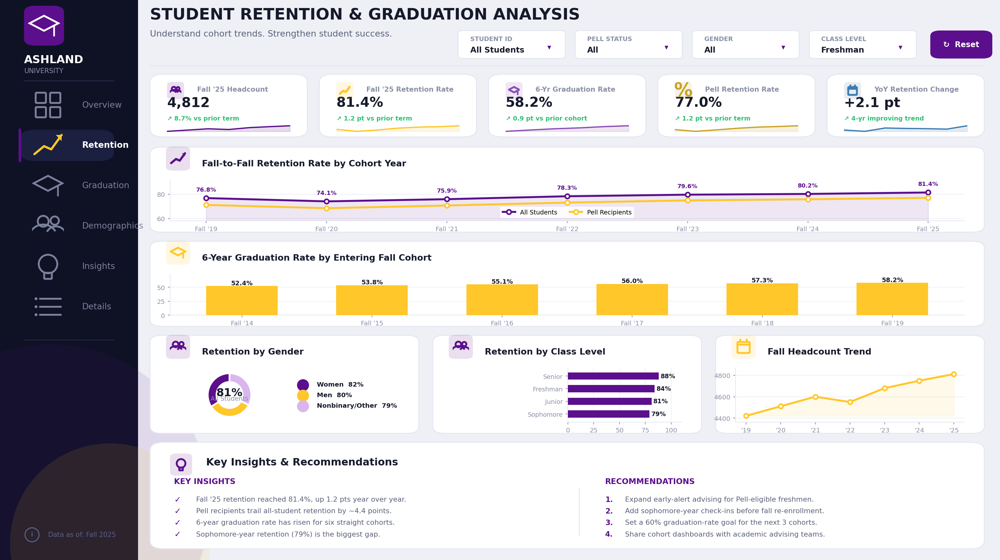
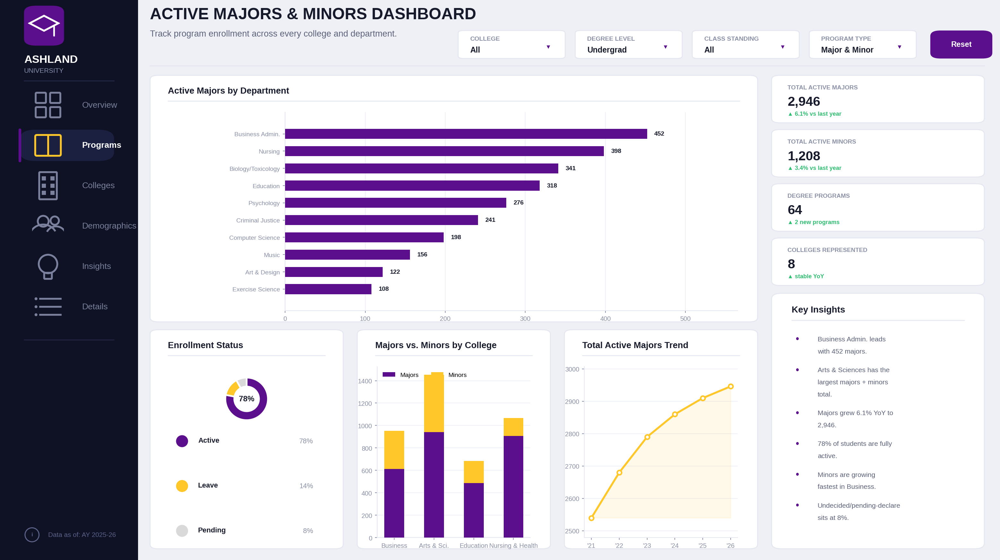
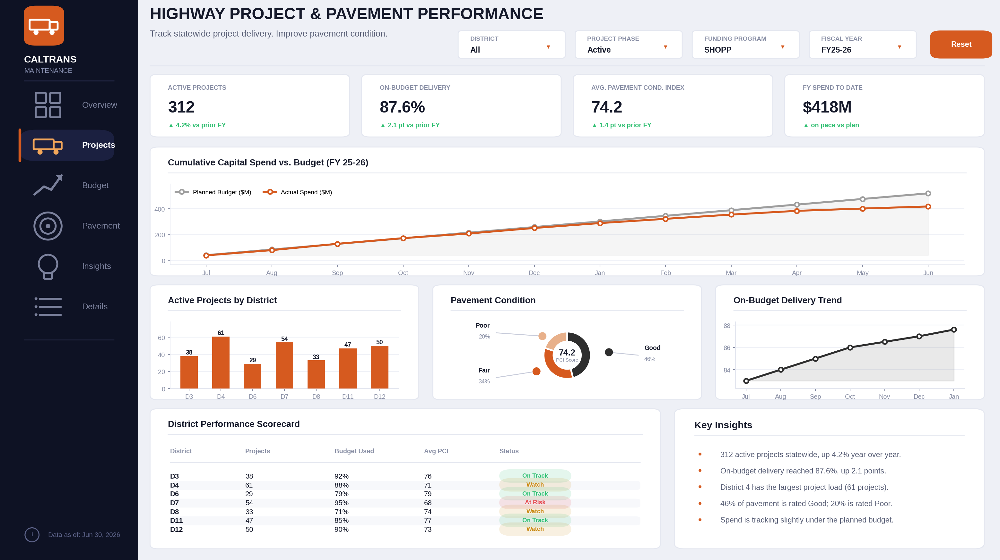
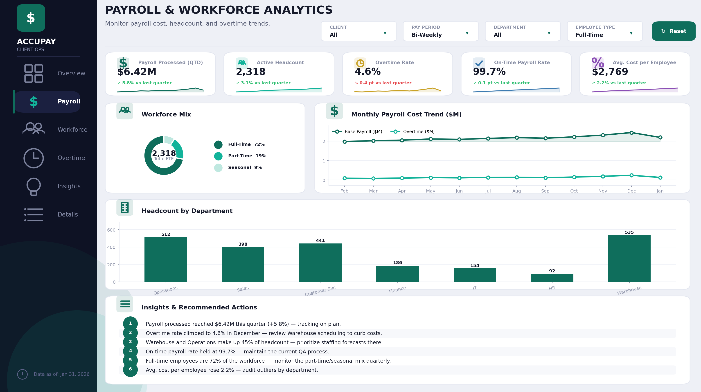

I design and build Power BI dashboards that turn raw institutional and operational data into clear, decision-ready visuals. Below is a selection of dashboards I've built for higher-education and enterprise clients, covering student success metrics, academic program enrollment, transportation project performance, and workforce/payroll analytics. All figures shown are illustrative placeholder data standing in for confidential client numbers.
Four Power BI dashboards spanning student success analytics, academic program management, transportation infrastructure, and payroll/workforce operations.

Built for Ashland University's institutional effectiveness team, this dashboard tracks how well the university keeps and graduates its students, year over year. The top half shows a fall-to-fall retention line chart comparing the overall student body against Pell Grant recipients across seven entering cohorts, so staff can immediately see whether retention is improving and whether equity gaps are closing. The bottom half shows a six-year graduation-rate bar chart by entering fall cohort, giving a longer-range view of how each incoming class ultimately performs. A left-hand filter panel lets users slice every visual by student ID, Pell status, gender, class level (freshman, sophomore, etc.), cohort type, college, residency, and fall term — so an advisor, dean, or accreditation reviewer can drill from the university-wide number down to a specific subgroup in a couple of clicks.

This dashboard gives Ashland's academic affairs office a real-time view of program enrollment across the entire university. A horizontal bar chart ranks every department by number of active majors, while a stacked bar chart compares majors against minors across each college, and a donut chart breaks down enrollment status (active, leave of absence, pending declare). KPI cards up top surface the headline numbers — total active majors, total active minors, number of degree programs, and number of colleges represented. Academically relevant filters (college/faculty, department, degree level, class standing, program type, enrollment status, academic year) let deans and program directors quickly see which programs are growing, which are shrinking, and how minors are distributed alongside majors.

Built for a Caltrans maintenance division, this dashboard monitors statewide highway project delivery and pavement condition. A line chart tracks cumulative capital spend against planned budget across the fiscal year, immediately flagging whether the program is over or under pace. A bar chart breaks down active projects by district, and a donut chart shows the statewide split of pavement condition (good, fair, poor) alongside the average Pavement Condition Index. KPI cards summarize active project count, on-budget delivery rate, average condition index, and year-to-date spend. Filters for district, route, project phase, funding program, fiscal year, priority level, and asset type let regional managers focus on exactly the slice of the network they oversee.

Designed for Accupay's client operations team, this dashboard turns payroll processing data into a quick operational health check. A monthly trend line separates base payroll cost from overtime cost, making it easy to spot seasonal overtime spikes. A bar chart shows headcount by department, and a donut chart shows the workforce mix across full-time, part-time, and seasonal employees. KPI cards up top report quarter-to-date payroll processed, active headcount, overtime rate, and on-time payroll rate — the metrics client-services teams get asked about most. Filters for client/company, pay period, department, employee type, location, fiscal quarter, and pay status let a payroll specialist narrow the view down to a single client or pay run in seconds.
What goes into building dashboards like these, end to end.
Star-schema data models, calculated measures, and time-intelligence DAX for cohort and fiscal-period analysis.
Power Query transformations to consolidate messy source extracts into clean, dashboard-ready tables.
Filter/slicer design, KPI card layout, and visual hierarchy so non-technical stakeholders can self-serve answers.
Working with institutional research, operations, and client-services teams to turn open questions into the right metric.